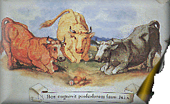

|

Woły pracowicie ciągnęły sochę, za którą równomiernym krokiem podążał oracz. Szeroki pas urodzajnej ziemi, poznaczony równo świeżymi skibami, pozostawał w tyle.
Słońce powoli chyląc się za horyzont kładło wydłużone cienie. Człowiek podniósł wzrok i krzyknął na zwierzęta, które zmęczone całodzienną pracą,
zwalniały idąc pod górę ku szczytowi pagórka. Orka dobiegała końca, będzie chleb.
Nagle socha zaparła się, woły szarpnęły mocniej i na boku znieruchomiała duża gruda ziemi. Zaprzęg stanął.
Zniecierpliwiony oracz w pierwszej chwili chciał skarcić zwierzęta za lenistwo, lecz oszołomiła go nagła zmiana, jaka nastąpiła w otoczeniu.
Pole rozjaśniło się jak w południe, a blask dochodził gdzieś z podziemi, oświetlając klęczące woły wpatrzone w jeden punkt.
Źródło światłości znajdowało się między oblepionymi ziemią resztkami jakiegoś naczynia. Był to kielich, a w nim śnieżno biała hostia, Chleb Żywy.
Tak oto można by opisać wydarzenia rozgrywające się w pierwszych latach XIV wieku na terenie obecnej wsi Głotowo.
Fakt ten przyniósł sławę tej miejscowości i trwa ona do dziś. W XIII wieku, gdy chrześcijaństwo obejmowało Prusy, w Głotowie wzniesiono drewniany
kościół parafialny pod wezwaniem św. Andrzeja. Początek wsi dał dokument lokacyjny wystawiony 12 marca1313 roku przez biskupa warmińskiego Ebenharda z Nysy.
Pierwszymi mieszkańcami byli pogezańscy Prusowie. Okolica ta leżąca na wschodnich rubieżach była często napadana przez pogańskie ludy mieszkające w sąsiedztwie.
W 1300 roku Głotowa sięgnął najazd Litwinów. Być może, jak głosi legenda, przed tym właśnie najazdem mieszkańcy w obawie przed rabusiami wynieśli
ze wspomnianego kościoła Najświętszy Sakrament, by uchronić go przed profanacją. Puszkę z Najświętszą Hostią zakopano w ziemi w pewnej odległości od świątyni.
Niektórym mieszkańcom udało się schronić w pobliskich lasach. Wieś została zniszczona, a kościół doszczętnie spalony.
Prawdopodobnie osoba, która ukryła Najświętszy Sakrament nie przeżyła tego najazdu pogan, bowiem nikt z ocalałych o ukrytej świętości nie wiedział.
Upłynęło wiele lat. Dopiero podczas kolejnej wiosennej orki rolnik, jak już wspomniano, przypadkowo odnalazł ukryty w ziemi kielich, a w nim nienaruszoną hostię.
Jak głosi legenda, woły ciągnące pług uklękły, jakby jeszcze podkreślając nadzwyczajność całego zdarzenia. Wiadomość o tym rozeszła się wśród ludu.
Kielich z hostią zabrano i w uroczystej procesji przeniesiono do kościoła w Dobrym Mieście. Ale jak głosi stare podanie, hostia w niewytłumaczalny sposób znowu znalazła się na polu,
gdzie została uprzednio zakopana. Przyjęto to za znak, że Bóg pragnie aby w tym miejscu zbudowano kościół ku czci Bożego Ciała.
W połowie XIV wieku zbudowano drugi już kościół, tym razem z cegły i kamienia. Od tego czasu Głotowo stało się miejscem pielgrzymkowym.
W styczniu 1356 kolejny najazd wojsk litewskich spowodował, że wieś została spalona. Dopiero 27 maja 1362 roku biskup Jan Striprok odnowił przywilej lokacyjny Głotowa.
Wieś szybko odbudowała się i zaludniła. Ruch pątniczy trwał nadal. Po przyłączeniu Warmii do Polski w 1466 roku do Głotowa przybywało coraz więcej pielgrzymów.
Powstałe tu Sanktuarium Najświętszego Sakramentu zasłynęło także przez dokonujące sIę w nim cudowne uzdrowienia i nawrócenia.
Szczęśliwie w XVII wieku Głotowo omijały zarazy a także wojska szwedzkie, które w tym czasie dwukrotnie najechały Polskę. Wówczas była to wieś zamożnych chłopów.
Ziemia była żyźna. Spore dochody przynosiła uprawa lnu i hodowla owiec. Dopiero w 1709 roku Głotowo dotknęła straszliwa dżuma powodując spustoszenie wśród miejscowej ludności.
Sanktuarium Eucharystyczne nadal stanowiło cel licznych pielgrzymek. Ani wojna północna ani zaraza nie przestraszyły ludzi. Z okolicznych wsi i miast szli pątnicy w nadziei
poratowania zdrowia, oddalenia zarazy i innych nieszczęść. Kult Najświętszego Sakramentu rozwijał się coraz bardziej. Ta sytuacja nakazywała wybudowanie nowego kościoła,
gdyż stara średniowieczna świątynia nie mogła już pomieścić wszystkich pielgrzymów. Rozebrano mury starego kościoła i rozpoczęto budowę nowego.
W dniu 22 sierpnia 1722 roku biskup Teodor Potocki wmurował kamień węgielny pod budowę głotowskiego sanktuarium. 24 lipca 1726 roku biskup Krzysztof Szembek konsekrował nową świątynię.
|